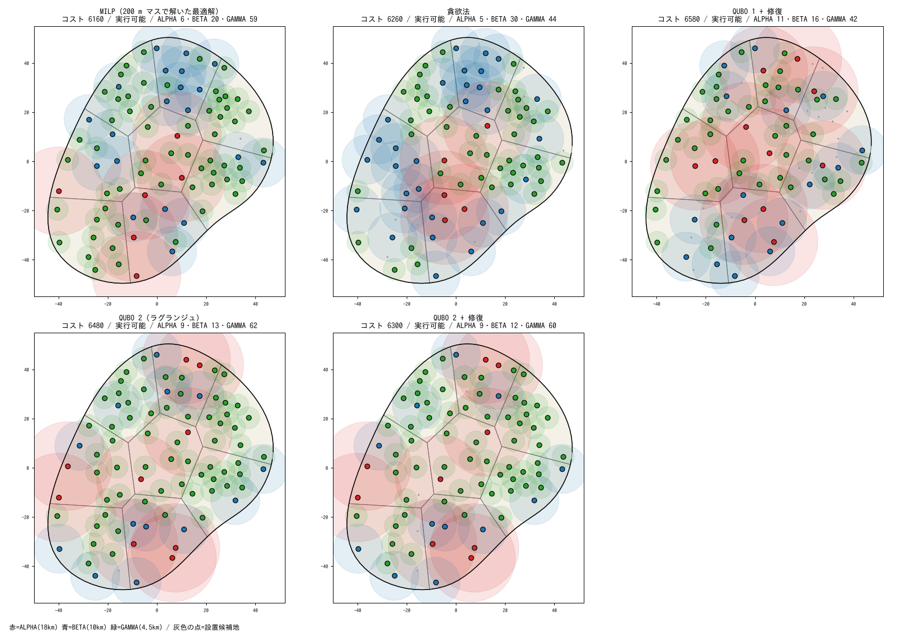
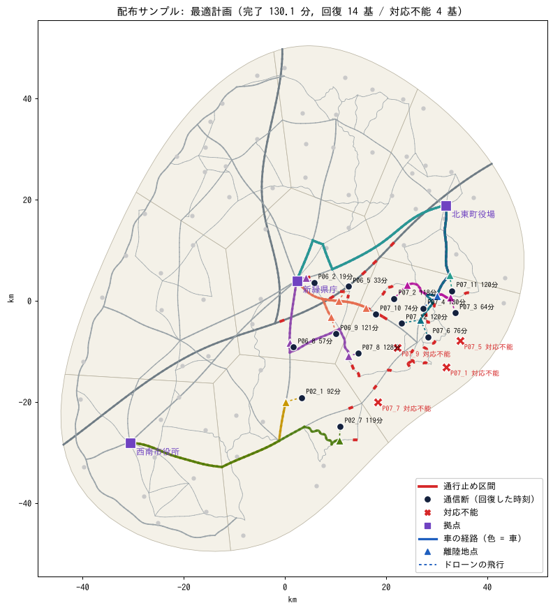

Project ・ 経済産業省 AKATSUKI プロジェクト「Q-Quest GROW」
IoTセンサー最適配置
架空の県（8 市町村）を舞台に、センサーの配置と災害時のドローン運用を最適化しました。QUBO（量子アニーリング向けの定式化）と古典的手法を同じ評価関数で比べ、どちらがどんな場面で有効かを検証しています。
Phase 1：固定センサーの最適配置
86 か所の設置候補地に 3 種類のセンサー（広域型・標準型・高精度型）のどれを置くかを決め、市町村ごとの被覆率と出力の目標を満たしつつ、総調達コストを最小にする問題です。

| 手法 | コスト | 最適との差 | 時間 |
|---|---|---|---|
| MILP（厳密解） | 6,160 | 最適 | 2.7 秒 |
| 貪欲法 | 6,260 | +1.6% | 14 秒 |
| QUBO（制約・スラックあり）＋修復 | 6,580 | +6.8% | 11 秒 |
| QUBO（ラグランジュ緩和）＋修復 | 6,300 | +2.3% | 9 秒 |
- 不等式制約をそのまま QUBO にすると、スラック変数のせいで焼きなましの解が制約を満たしませんでした（5 回とも）。
- そこでラグランジュ緩和で制約を目的関数に入れ、乗数を外側のループで調整する形に変えました。修復なしでも実行可能な解が得られ、最適との差は +5.2%（修復後 +2.3%）まで縮みました。
- 円の和集合の面積は 2 次式で書けないため、ボンフェローニの不等式による下界で近似し、被覆を多く見積もらないようにしています。
Phase 2：災害時ドローンによる通信の回復
地震で通信が止まったセンサーを、ドック搭載車で運んだドローンの中継で回復させる問題です。配布された道路網（1,682 区間）と通行止めを考慮し、全センサーの回復を最も早く終える計画を求めました。

- 飛行候補を列挙し、車ごとの飛行の組を集合分割 MILP で選ぶ厳密解法で、最適な完了時刻 130.1 分を 0.2 秒で証明しました。
- QUBO 版は被覆を等式で書くことでスラック変数をなくし、「最大値の最小化」は負荷の 2 乗和で置き換えました。修復と局所探索を加えると、厳密解と同じ値に届きます。
- 条件を 1 つずつ変えて感度を調べ、「震源に近い拠点に車を 2 台足すと 30 分早くなる」など、運用の判断に使える結果を出しました。
- 情報が少しずつ分かる状況を想定し、判明するたびに計画を作り直す逐次再計画も実装しました。
応用：毎秒の再最適化とトラブル対応
20 機のドローンを各市町村に配置し、1 秒ごとに QUBO を解き直して動きを決めるシミュレーションも作りました。火災や要救助者の発見、機体の故障が起きると、その秒のうちに制約を変えて組み直します。
- 6 時間で約 2 万回の QUBO を、1 回あたり組み立て 11 ms・求解 3 ms で解き、毎秒の更新に間に合わせました。
- 機体性能から「全域を 60 分ごとに巡回するのは不可能（最大約 14%）」と先に見積もり、そのうえで巡回範囲を広げる工夫（目的地変数、基地の移動）を入れ、6 時間の巡回率を 16% から 27% に上げました。
現在の取り組み
ここまでの検証では、この規模の問題は MILP などの古典的な厳密解法のほうが速く、良い解を出しました。一方で QUBO も、定式化を工夫することで実用的な解に近づけられることが分かってきています。量子技術を使うこと自体を目的にせず、従来手法と比べながら使いどころを見極めるため、現在も研究開発に取り組んでいます。